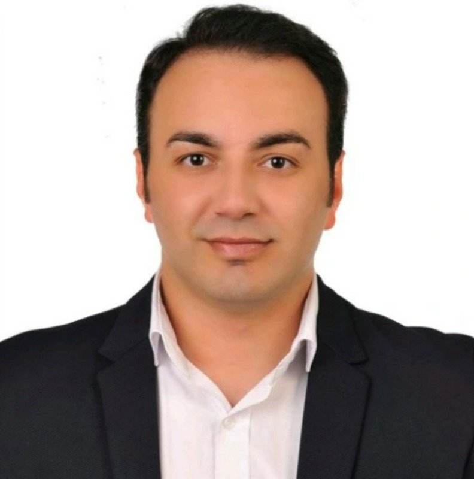

Yetkilimiz

CSR BİO Tarım Yetkilisi
Volkan Baki Cesur
- Ünvan
- Ziraat Mühendisi
- Mezuniyet
- Süleyman Demirel Üniversitesi
2023 yılında başladığım tarım sektörü yolculuğumda; bitki besleme, bitki hastalıkları ve zararlıları ile tohum alanlarında bilgi ve saha deneyimimi geliştirmeye odaklandım. Tarımsal üretim süreçlerini bütüncül bir yaklaşımla değerlendirerek bitki gelişimi, doğru besleme uygulamaları ve verimliliğin artırılmasına yönelik çözümler üzerinde çalışıyorum. Akademik altyapımı saha deneyimiyle birleştirerek üreticilerin ihtiyaçlarını doğru analiz etmeyi ve sürdürülebilir tarımsal üretime katkı sağlamayı hedefliyorum. Bitkilerinizin ihtiyaçlarını doğru değerlendirmek ve üretim sürecinize uygun çözümler sunabilmek için çalışmalarımı sürdürmeye devam edeceğim.